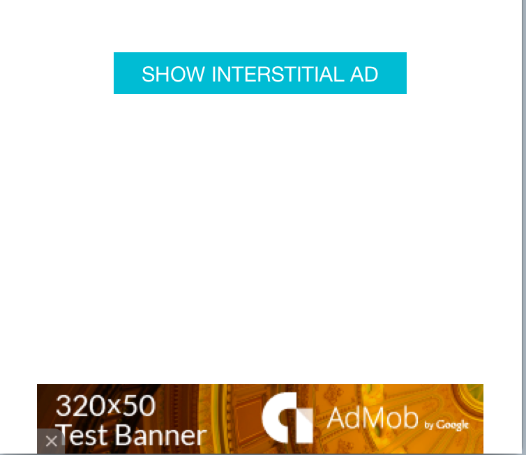
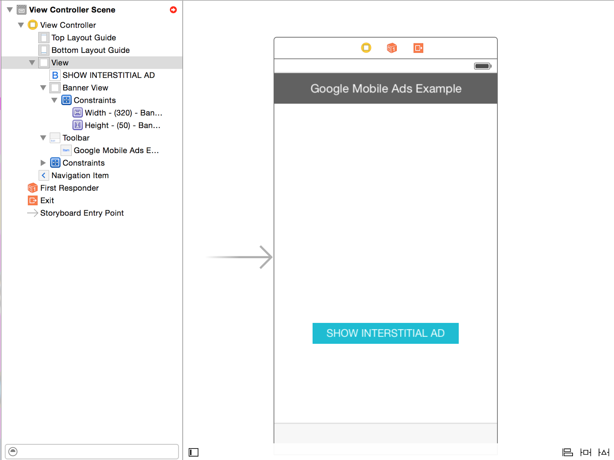
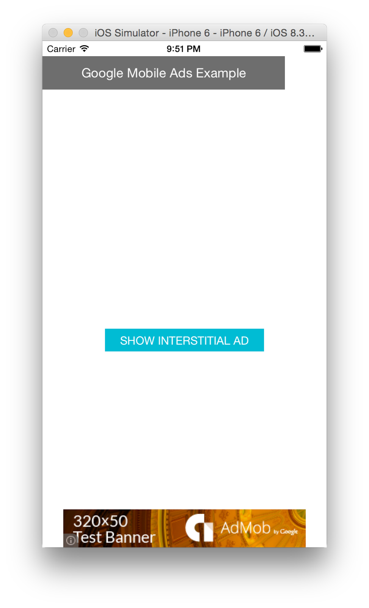
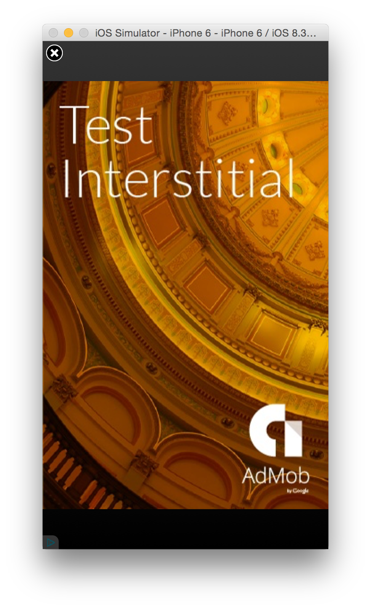

This codelab shows you how to create a new iOS project, include the Google Mobile Ads SDK, and add a banner and interstitial ad.

You can either download all the sample code to your computer...
...or clone the GitHub repository from the command line.
$ git clone https://github.com/googlesamples/io2015-codelabs.git
Open the terminal and navigate to the directory with the sample code. Run pod install to make sure you’re up to date with the latest dependencies, and then open AdMobExample.xcworkspace.
Here you’ll see the frame of the project, with the UI set-up. There’s a storyboard with a Banner View and a button. Currently they don’t do anything, they’re just so you don’t have to set-up the user interface.

You’ll see that running pod install took care of adding in all the dependencies you needed, including the AdMob SDK. Currently the app will build but will crash on running.
By adding in only a few lines of code, we can get to a working app that has ads in it.
First import the core Google SDK:
Then, in AppDelegate.m, add the following line to the application:didFinishLaunchingWithOptions: method:
In ViewController.m, take the following steps:
ViewController implements GADInterstitialDelegate.In viewDidLoad, add the banner and interstitial ads:
The interstitial will be off screen until you press the button.
Speaking of which, add a method to handle the button click, so the interstitial loads:
And code so the interstitial can be loaded and dismissed:
Naturally we’re only running with test ads. If you want to use real ads, you would have to create an AdMob account, which is out of scope for this codelab. But by using the Ad Unit Ids provided in the GoogleService-Info.plist file in the sample app, you’re able to run test apps. In this case, the ads go to developers.google.com.
Here’s what it looks like in the simulator.

You can see the banner ad along the bottom. If you click the Show Interstitial Ad button, it brings up the ad:

You can dismiss the ad by clicking on the upper left close button.
Congratulations! You’re now done adding AdMob to your iOS application!